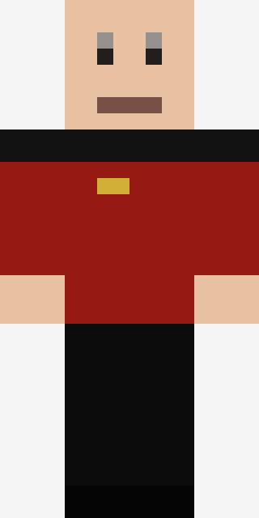
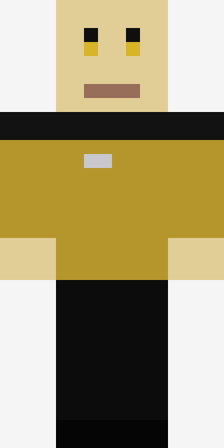
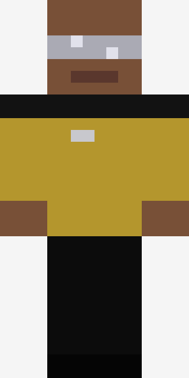
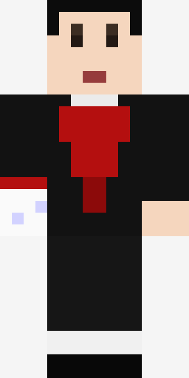
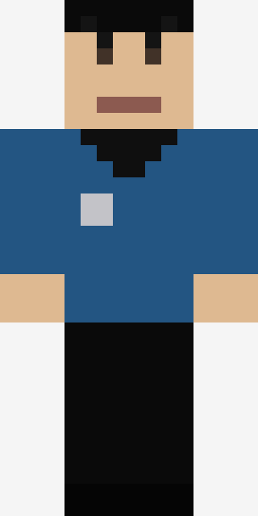
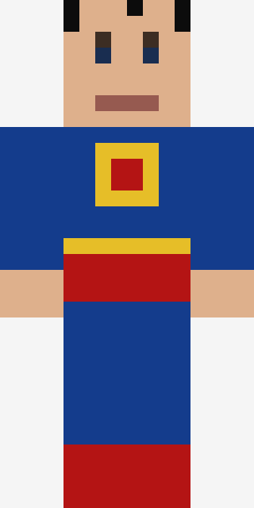
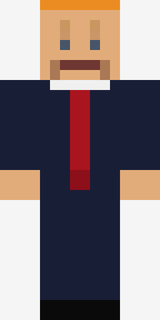

Captain Picard
Star Trek TNG - rote Kommandouniform, goldenes Communicator-Abzeichen.
Skin herunterladen (.png)Eine Sammlung selbstgemachter 64x64 Minecraft-Skins. PNG herunterladen und im eigenen Client hochladen, oder per SkinsRestorer serverseitig zuweisen.

Star Trek TNG - rote Kommandouniform, goldenes Communicator-Abzeichen.
Skin herunterladen (.png)
Star Trek TNG - goldene Operations-Uniform, blass-goldene Haut, gelbe Augen.
Skin herunterladen (.png)
Star Trek TNG - goldene Uniform mit dem markanten VISOR über den Augen.
Skin herunterladen (.png)
Schwarzer Anzug mit rotem Akzent, weißer Handschuh, Fedora.
Skin herunterladen (.png)
Star Trek TOS - blaue Wissenschaftsuniform, Bowl-Cut, angedeutete Spitzohren.
Skin herunterladen (.png)
Blauer Anzug, Brustschild, roter Umhang (nur von hinten sichtbar).
Skin herunterladen (.png)
Stilisierte Karikatur - Anzug, lange rote Krawatte, markante Frisur.
Skin herunterladen (.png)